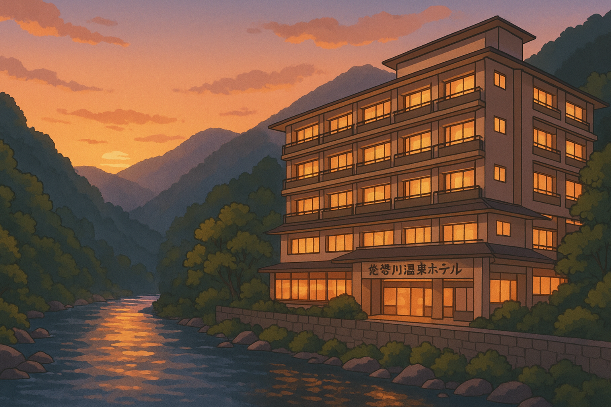

2日目（5月3日・土）
午前：自然散策とチェックアウト
- 7:00～8:00 朝食バイキング
- 9:00 チェックアウト・出発
- 9:30～10:30 竜王峡ハイキング
新緑の渓谷を家族で散策。マイナスイオン溢れる清流沿いの遊歩道を往復1時間ほど歩きます。

2025年5月2日（金）～5月3日（土）／1泊2日

| 時間帯 | 内容 |
|---|---|
| 5月2日 14:00 | 東京出発 |
| 5月2日 17:30 | ホテル到着・チェックイン |
| 5月2日 18:30 | 夕食バイキング |
| 5月2日 20:00～ | 温泉・館内散策 |
| 5月3日 7:00～ | 朝食・チェックアウト準備 |
| 5月3日 9:00 | チェックアウト・出発 |
| 5月3日 9:30～10:30 | 竜王峡ハイキング |
| 5月3日 11:15～14:30 | 日光江戸村観光 |
| 5月3日 15:00 | 東京へ向け出発 |
| 5月3日 17:30～18:30 | 羽生PA休憩・夕食 |
| 5月3日 21:00頃 | 東京自宅到着 |